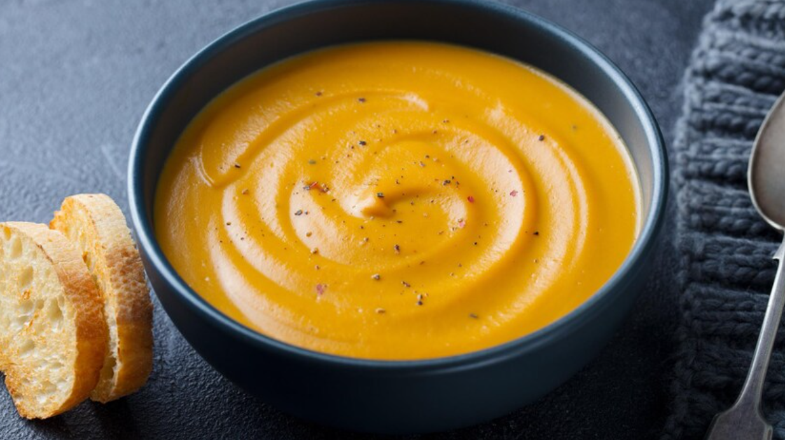

Potage de courge Butternut
Ingrédients
- Oignons, coupés en dés - 1/2
- Gingembre frais haché - 1 c. à thé
- Gousses d'ail, hachées - 3
- Huile d'olive - 3 c. à soupe
- Courge Butternut, pelée, épépinée et coupée en dés - 1kg
- Eau - 4 tasses
- Poudre de bouillon de légumes - 3 c. à soupe
- Sel et poivre - Au goût
Préparation
- Dans une casserole à feu moyen, faites dorer l'oignon, le gingembre
et l'ail dans l'huile.
- Ajoutez la chair de courge, l'eau et le bouillon de poulet en
poudre.
- Portez le liquide à ébullition et laissez cuire environ 20 minutes
jusqu'à ce que la courge soit cuite.
- Hors du feu, à l'aide d'un bras mélangeur, réduisez le potage
en purée. Ajustez l'assaisonnement au goût.